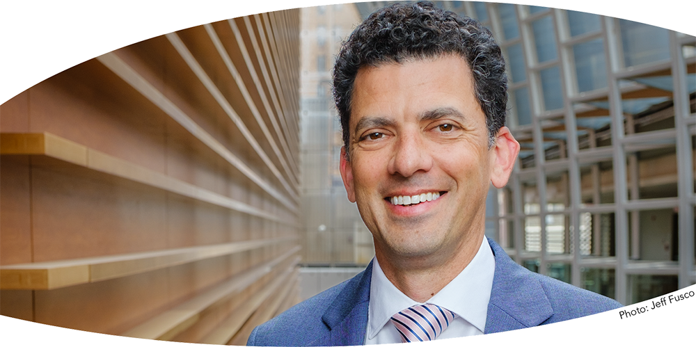

| PROFILE | | | PRESS | | | MEDIA | | | RECORDINGS | | | COMMISSIONS | | | PARTNERSHIPS |
|---|

Jeremy Rothman is internationally recognized as a visionary performing arts executive with 25 years of achievement in connecting performers, audiences, and communities through powerful artistic experiences. His innovative programming expands audiences, inspires philanthropy and ticket sales, and generates novel collaborations among institutions. He is a proven fundraiser, public spokesperson, strategic leader, and fiscal steward.
As the Chief Programming Officer of The Philadelphia Orchestra and Ensemble Arts, Jeremy unifies a vast portfolio of over 300 orchestral, theatrical, educational, and popular programming performances across three venues. Jeremy was an instrumental leader in the merger of The Philadelphia Orchestra and the Kimmel Center for the Performing Arts (now The Philadelphia Orchestra and Ensemble Arts), fully integrating artistic, education, and community programming into what is one of the largest performing arts series in the country, welcoming hundreds of thousands of visitors and 30,000 students annually. His programming explores compelling intersections between orchestral music, opera, dance, musical theater, the visual arts, and technology through creative collaborations with a wide array of genre-defying artists.
Jeremy led the search process and launch of Yannick Nézet-Séguin’s appointment as only the eighth Music Director in The Philadelphia Orchestra’s history. He also navigated the roll-out of Marin Alsop as Music Director of the Baltimore Symphony Orchestra, the first woman to lead a major American orchestra. In addition to these historic milestones, Jeremy has created programs that develop and mentor emerging talent – including training for young instrumentalists in public schools, composer workshops, and conductor fellowship programs.
With a profound commitment to expanding and diversifying the symphonic repertoire, Jeremy has initiated or commissioned over 50 new orchestral works, the majority of which are composed by women or BIPOC artists. He has also secured grants to support the restoration and proliferation of historically overlooked composers like Florence Price and William Grant Still.
Creating meaningful partnerships with cultural and social service organizations, Jeremy expands the reach of the performing arts into communities across the country and around the world by presenting artists in community centers, in hospitals, and alongside marginalized populations. Innovative collaborations with organizations – ranging from NASA to local libraries – demonstrate the versatile impact of the performing arts. And he has broadened access to orchestral music through digital media platforms, spearheading multiple GRAMMY award-winning recordings and crafting local and national radio broadcast series.
Jeremy has produced countless high-profile events, including The Philadelphia Orchestra’s essential role in Pope Francis’ internationally televised visit to Philadelphia. He has written for and collaborated with notable artists such as Sting, Steve Martin, Queen Latifah, Billie Jean King, John Williams, Whoopie Goldberg, and Hugh Jackman, among many others. And he has produced programming for more than a dozen international tours throughout Europe, Israel, and Asia, with a particular focus on cultural exchange in China. During the pandemic, his innovative virtual programming bridged communities and small businesses struggling from the shutdowns.
In his executive leadership role, Jeremy is an active fundraiser, securing six- and seven-figure foundation and individual support for operational and capital campaigns. He has a track record of rigorous fiscal management of eight-figure programming budgets and has been a leader in multiple organizational strategic plans. He appears regularly in television, radio, and print media as a spokesperson for the arts.
Jeremy completed the League of American Orchestras Orchestra Management Fellowship Program and earned a degree in Music Administration from the University of Rochester where he also studied trumpet performance at the Eastman School of Music.